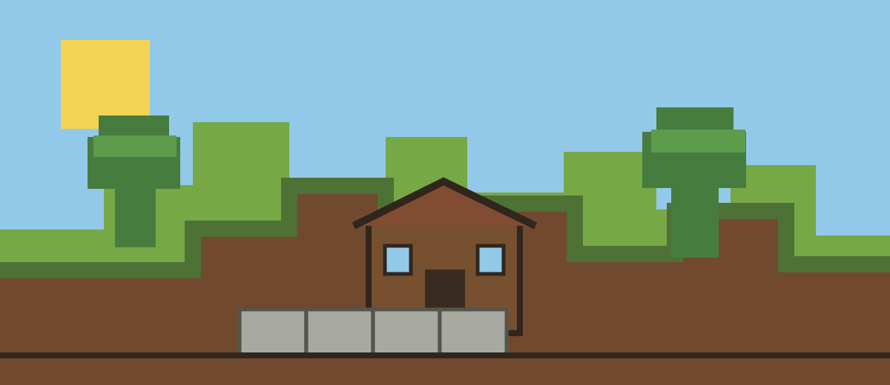

FIELD NOTES / BLOCK SYSTEM 01
Make the world
click into place.
Reusable parts for item grids, recipes, and block selection.

World material studygrid · strata · hard light
Crafting row
Preview only · add the missing stick to complete.
Block palette
Grass selected · placement is a preview.